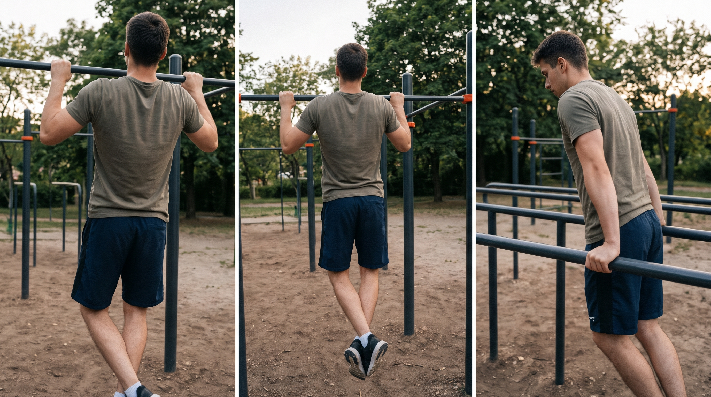

Spor, Calisthenics ve Fiziksel Antrenman

Bilgisayar başındaki yoğun çalışma temposunu dengelemek için düzenli olarak spor yapıyorum. Özellikle kendi vücut ağırlığımla güç ve kontrol geliştirmeye odaklanan Calisthenics antrenmanlarıyla, ağırlık çalışmalarını ve kardiyoyu bir arada yürütüyorum. Uyguladığım haftalık antrenman düzenim şu adımlardan oluşuyor:
- Isınma ve Mobilite: Antrenman öncesi eklem hazırlığı ve esneme hareketleri.
- Calisthenics ve Güç: Vücut ağırlığıyla yapılan temel çekiş, itiş ve merkez bölge (core) egzersizleri.
- Ağırlık Antrenmanı: Haftada 3-4 günlük bölgesel ağırlık programı.
- Kardiyo: Antrenman sonunda eğimli koşu bandı yürüyüşü ve kondisyon bisikleti.